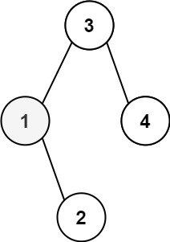
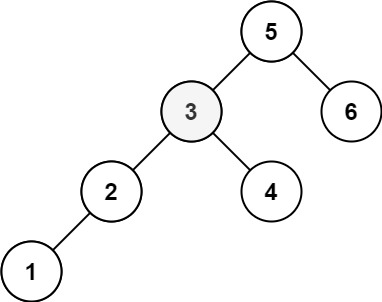

题面
给定一个二叉搜索树的根节点 root ，和一个整数 k ，请你设计一个算法查找其中第 k 小的元素（k 从 1 开始计数）。
示例 1：

输入： root = [3,1,4,null,2], k = 1
输出： 1示例 2：

输入： root = [5,3,6,2,4,null,null,1], k = 3
输出： 3提示：
- 树中的节点数为
n。 1 <= k <= n <= 1040 <= Node.val <= 104
进阶： 如果二叉搜索树经常被修改（插入/删除操作）并且你需要频繁地查找第 k 小的值，你将如何优化算法？
思路
- BST 的中序遍历就是升序序列，第 k 个遍历到的节点就是第 k 小的。在中序遍历基础上加一个计数器即可
递归中什么时候用 return 传值 什么时候用副作用 外部变量
副作用模式（外部变量） | return 传值模式 | |
|---|---|---|
适用场景 | 遍历过程中"找某个值"或"收集数据" | 每层必须把结果组装起来返回给上层 |
典型题目 | 中序遍历、本题（第 k 小）、直径 | maxDepth、翻转二叉树、有序数组转 BST |
层间关系 | 每层互不关心，谁找到谁写入 | 每层都是中转站，必须接住下面的结果再传上去 |
复杂度 | 简单——不管递归返回值 | 复杂——漏接一层值就丢了 |
- 副作用模式：每层只管做自己的事（左→处理→右），答案存在外部变量，不需要层层转发
dfs(node.left) # 不管返回值
self.cnt += 1
if self.cnt == k:
self.ans = node.val
return
dfs(node.right) # 不管返回值- return 传值模式：每层要当中转站——检查"下面找到了吗？找到了帮它传上去，没找到再继续"
left_result = dfs(node.left)
if left_result is not None: return left_result # 必须接住！
self.cnt += 1
if self.cnt == k: return node.val
return dfs(node.right) # 最后一行不用判断，后面没代码了- 结论：这类"遍历过程中找某个值"的题目，用副作用模式就好，别为难自己
代码实现
class Solution:
def kthSmallest(self, root: Optional[TreeNode], k: int) -> int:
self.ans = 0
self.cnt = 0
def dfs(node: Optional[TreeNode]):
if not node:
return
dfs(node.left)
self.cnt += 1
# 先加再判断，因为这个node有，所以先加1，毕竟cnt初始为0
if self.cnt == k:
self.ans = node.val
return
dfs(node.right)
dfs(root)
return self.ans- 易错点：
- 别忘了 `return self.ans`：
dfs是副作用模式不返回值，主函数最后必须手动 return 外部变量。漏写了函数返回 None，LeetCode 输出 null - `self.cnt` 从 0 开始，先 +1 再判断：因为遍历到一个节点说明它存在，先计数再看是不是第 k 个
- 找到后的 `return` 只是停止当前层：它不会终止整个递归（上层的
dfs(node.right)还会继续跑），只是提前跳过右子树。对结果没影响，因为self.ans已经写好了，后续self.cnt不会再等于 k
- 复杂度：时间 O(n)，空间 O(n)（递归调用栈）